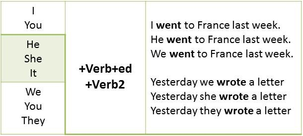

Время Past Simple, его употребление и образование.
Употребление Past Simple.
Время Past Simple используется для обозначения действия, которое произошло в определенное время в прошлом и время совершения которого ужеистекло.
Для уточнения момента совершения действия в прошлом при использовании времени Past Simple обычно используются такие слова, как:
five days ago – пять дней назад
last year – в прошлом году
yesterday – вчера
in 1980 – в 1980 году
и т.п.
Для того, чтобы поставить английский глагол во время Past Simple, нужно использовать его «вторую форму». Для большинства глаголов она образуется прибавлением окончания -ed. Однако есть также достаточно большая группа неправильных английских глаголов, которые образуют форму прошедшего времени не по общим правилам, для них форму прошедшего времени нужно просто запомнить:
Глагол "to be" в Past Simple
Также, как и в Present Simple, глагол "to be" спрягается. Но в этот раз он имеет только 2 формы: "was" и "were". Первую форму мы используем для единственного числа, а вторую для множественных чисел:
Это всё,что нужно знать о Past Simple в Positive sentence. Ознакомиться с материалом можете на сайте википедия.